MS41 Simulator
Simulateur du calculateur moteur BMW MS41.0 (processeur Siemens SAB80C166W à 12 MHz). Il exécute le vrai firmware lu dans le calculateur, instruction par instruction, avec ses périphériques, un moteur M52 virtuel branché sur ses broches et une ligne K pour les outils de diagnostic.
Ce que l'on peut faire :
- suivre le firmware pas à pas (désassemblage, registres, mémoire, points d'arrêt) ;
- voir en direct quelles cellules des tables de calibration (définition RomRaider) le calculateur lit ;
- faire tourner un moteur M52 virtuel (B20, B25 ou B28) : démarrage, ralenti régulé, accélérations, pannes de capteurs ;
- l'entendre (son synthétisé, pops au lever de pied), couper et remettre le contact comme sur la voiture ;
- le passer au banc de puissance : courbes de couple et de puissance mesurées au frein, comparées à une estimation tirée des tables ;
- observer les signaux sur les broches (chronogrammes) et l'évolution des capteurs dans le temps (courbes) ;
- dialoguer en K-line avec le calculateur simulé, directement ou avec MS41 ECU Tool intégré (identification, défauts, lecture et écriture de la flash).
Un clic sur une image l'agrandit. Les numéros rouges des captures renvoient aux listes sous chaque image.
Démarrage rapide
- Lancer le simulateur : double-clic sur MS41Simulator.jar (Java 8 ou plus récent). La fenêtre de démarrage MS41 SIMULATOR s'affiche pendant la préparation de la fenêtre principale.
- Charger un full read : Fichier > Charger full read… (ou le bouton de la barre d'outils). N'importe quel dump de 256 Ko convient, lecture brute de la puce ou vue CPU : le format est détecté tout seul. Une définition RomRaider (fichier XML) placée dans le dossier docs/definitions du simulateur est chargée automatiquement ; sinon Fichier > Charger une définition RomRaider. Sans définition, tout fonctionne sauf l'onglet Tables, la reconnaissance des injecteurs prévus par la cartographie et l'estimation du banc d'après les tables.
- Choisir le moteur dans l'onglet Moteur virtuel : M52B20, B25 ou B28, et les injecteurs montés. La cartographie ne permet pas de deviner le moteur ; le choix est mémorisé.
- Cliquer sur « Démarrer » dans le même onglet. Le moteur est branché, l'exécution (Run) est lancée et le démarreur est actionné jusqu'à ce que le moteur tourne seul (en général en 1 à 2 s). Choisir la vitesse temps réel pour voir le moteur évoluer à son rythme.
- Jouer avec le moteur : curseur Papillon, températures, pannes simulées. Suivre le résultat dans les onglets Courbes et Chronogrammes, et dans Tables (cellules lues en orange).
- Diagnostic : Outils > MS41 ECU Tool pour l'identification, les défauts et les données en direct.
La fenêtre principale
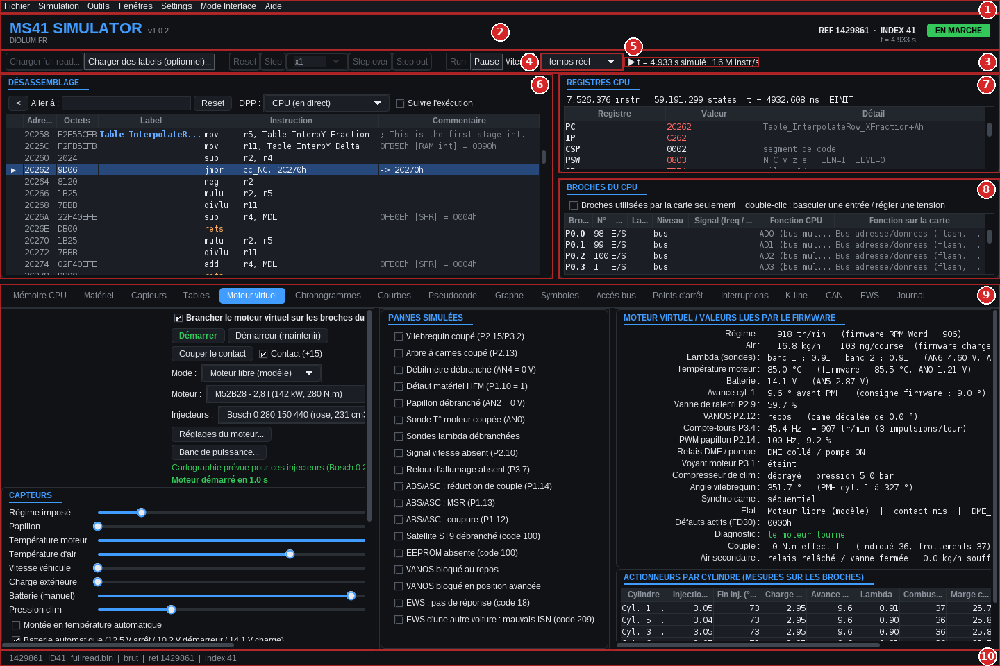
- Menus : Fichier, Simulation, Outils, Fenêtres, Settings, Aide (voir Menus et raccourcis).
- En-tête : calibration chargée (référence et index), temps simulé et pastille d'état de la simulation (voir Apparence).
- Barre d'outils : chargement, Reset, Step (avec le nombre d'instructions par pas), Step over, Step out, Run, Pause.
- Vitesse de la simulation en Run : temps réel (12 MHz, le temps simulé suit l'horloge), max (aussi vite que possible) ou ralentie (1/10 à 1/1000, pour suivre les signaux à l'œil).
- Temps simulé et vitesse d'exécution (millions d'instructions par seconde réelle).
- Désassemblage du firmware autour de l'instruction courante.
- Registres CPU : PC, IP, CSP, PSW, pile, banque de registres…
- Broches du CPU : état de chaque broche, fréquence et rapport cyclique des signaux, tensions analogiques.
- Onglets du bas : chacun peut s'ouvrir dans sa propre fenêtre (double-clic sur l'onglet).
- Barre d'état : fichier chargé, format (brut / vue CPU), référence et index de la calibration.
Apparence : thème sombre ou clair
Par défaut, le simulateur a l'apparence de MS41 ECU Tool : fond sombre, panneaux en cartes arrondies dont le titre est en majuscules bleues soulignées, boutons plats, onglet choisi en pastille bleue, texte clair. Les états gardent leurs couleurs : vert pour ce qui va bien (moteur démarré, octet de diagnostic accepté), orange pour une attention (voyant, octets lus), rouge pour une erreur ou une écriture. En haut, un en-tête rappelle la calibration chargée (référence et index), le temps simulé et l'état de la simulation dans une pastille : EN MARCHE (vert), ARRÊT (gris) ou ARRÊT : POINT D'ARRÊT (orange). Le bouton Run est en bleu.
Settings > Thème : Sombre (style MS41 ECU Tool) ou Clair (apparence du système), l'apparence d'avant (sans en-tête). Le choix est gardé et pris en compte au lancement suivant. Les captures de ce guide sont faites avec le thème sombre.
Exécuter le firmware
| Commande | Raccourci | Effet |
|---|---|---|
| Reset | Mise sous tension et reset du CPU (RAM effacée). | |
| Step | F7 | Exécute 1 instruction (ou le nombre choisi à côté : ×10 … ×100 000). |
| Step over | F8 | Exécute l'instruction ; un appel de fonction est exécuté en entier. |
| Step out | Maj+F8 | Exécute jusqu'au retour de la fonction courante. |
| Run | F9 | Exécution continue jusqu'à Pause, un point d'arrêt ou un trap matériel. |
| Pause | F6 | Arrête l'exécution. |
| Exécuter jusqu'à la ligne | F4 | Run jusqu'à la ligne sélectionnée du désassemblage. |
| Point d'arrêt sur la ligne | F2 | Pose ou retire un point d'arrêt sur la ligne sélectionnée. |
Ces raccourcis fonctionnent aussi dans les fenêtres séparées.
Désassemblage
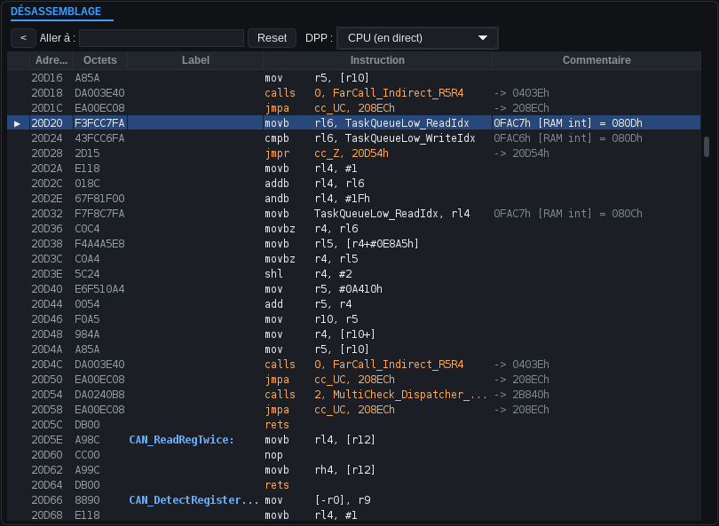
- Aller à : une adresse hexa (
430,0x20000) ou un nom de label ; < revient en arrière ; Reset va au point d'entrée. - DPP : pages utilisées pour traduire les adresses mémoire 16 bits (valeurs du CPU en direct, ou valeurs après l'initialisation).
- Double-clic sur une ligne : suit le saut ou l'appel, ou affiche dans l'onglet Mémoire la donnée accédée.
- Clic droit : point d'arrêt ici (F2), exécuter jusqu'ici (F4), placer le PC ici.
- La colonne Commentaire donne la cible des sauts et la valeur actuelle des variables lues (zone et contenu).
Registres CPU
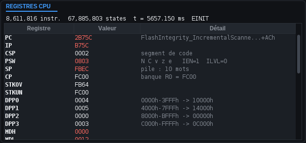
Compteur d'instructions et de cycles, temps simulé, état du CPU (EINIT = initialisation terminée), puis les registres avec leur décodage (indicateurs du PSW, niveau d'interruption, pile, banque de registres).
Broches du CPU
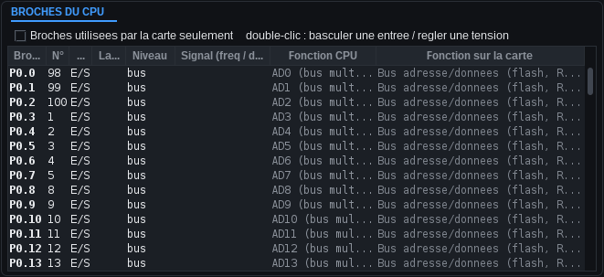
Pour chaque broche : direction (E entrée / S sortie), latch, niveau, et pour les signaux qui changent leur fréquence et rapport cyclique (bobines, injecteurs, vanne de ralenti, VANOS…), avec la fonction et le numéro sur le connecteur X6000. Double-clic : bascule une entrée ou règle une tension AN0-AN9. La liste contient toutes les broches du SAB 80C166W avec leur numéro sur le boîtier : ports P0 (bus) à P5, et broches spéciales (quartz, configuration du bus, reset, NMI, référence du convertisseur, alimentations). La colonne Fonction CPU donne la fonction prévue par la datasheet, la dernière colonne l'usage sur la carte ; les broches que la carte n'utilise pas sont en gris. « Broches utilisées par la carte seulement » masque les autres.
Les puces de la carte
Le simulateur reproduit la carte du calculateur puce par puce. L'onglet Matériel en bas de la fenêtre a un sous-onglet par boîtier : CPU SAB 80C166W, Flash 28F200, RAM U21 (6264), PLCC U22 (PALCE16V8) et EEPROM 24C04. Le contrôleur CAN et le satellite n'ont pas de sous-onglet : ils se suivent dans leurs onglets (CAN, Capteurs, EWS).
Chaque sous-onglet a trois parties :
- Ce qui est émulé : ce que le simulateur reproduit de la puce, et ce qu'il ne reproduit pas.
- Broches : numéro (quand le boîtier est connu), nom, sens, état et fonction sur la carte. Les broches de bus montrent l'état du dernier cycle de la puce (adresse, donnée, lecture ou écriture) ; les autres sont en direct.
- Contenu en direct : les octets lus par le programme passent en orange, ceux écrits en rouge, et la couleur s'estompe en 2 s (seules les lectures de données sont colorées, pas la lecture du code). Aller à une adresse, Dernier accès : l'octet touché en dernier. Double-clic : modifier un octet, comme avec un programmateur externe (le firmware voit la nouvelle valeur). Enregistrer… / Charger… : le contenu de la puce dans un fichier.
CPU Siemens SAB 80C166W
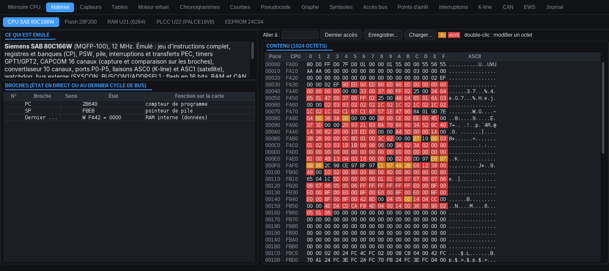
Le processeur 16 bits du calculateur (boîtier MQFP-100, 12 MHz). Il exécute le firmware lu dans le full read, instruction par instruction.
- Émulé : jeu d'instructions complet, registres et banques de registres (CP), PSW, pile, interruptions et transferts PEC, timers GPT1 / GPT2, CAPCOM 16 canaux (capture et comparaison sur les broches), convertisseur analogique 10 canaux, ports P0 à P5, liaisons série ASC0 (K-line) et ASC1 (satellite), watchdog, bus externe (flash en 16 bits, RAM et CAN en 8 bits). Le temps est compté en états CPU par instruction.
- Pas émulé : états d'attente exacts du bus, consommation.
- Vue Matériel : compteur de programme, pile, dernier accès, et la RAM interne (0xFA00-0xFDFF : registres R0-R15 des banques, pile, variables du firmware).
- Ailleurs : désassemblage, registres, broches du CPU (toutes les broches du boîtier, en direct), interruptions, mémoire telle que le CPU la voit, pseudocode.
Flash Intel 28F200
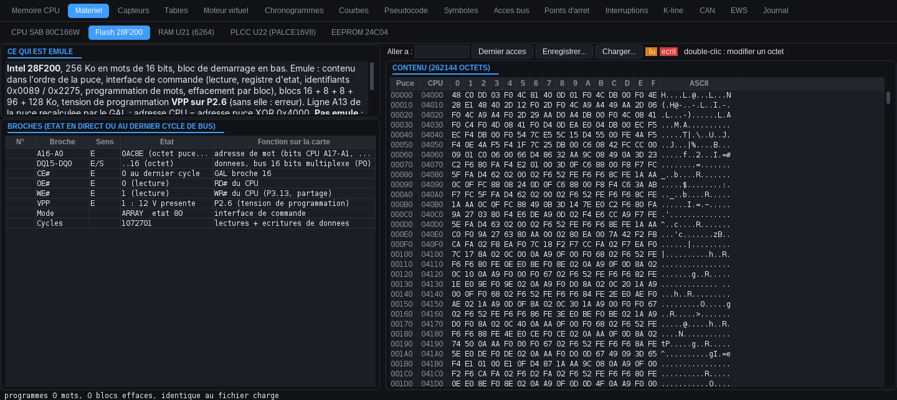
La mémoire du programme et de la calibration : 256 Ko en mots de 16 bits, bloc de démarrage en bas (blocs de 16, 8, 8, 96 et 128 Ko).
- Émulé : contenu dans l'ordre de la puce, interface de commande (lecture, registre d'état, identifiants, programmation de mots, effacement par bloc), tension de programmation VPP commandée par P2.6 (sans elle, la programmation échoue). La ligne A13 de la puce est recalculée par le décodeur PLCC : adresse CPU = adresse puce XOR 0x4000 (colonnes Puce et CPU de la vue).
- Pas émulé : durées de programmation et d'effacement (instantanées), endurance. Boîtier et numéros de broche non relevés sur la carte (signaux seulement).
- Programmer la flash : comme sur la voiture, par la K-line avec MS41 ECU Tool, ou directement dans la vue (double-clic, Charger…). Fichier > Enregistrer la flash simulée récupère le résultat dans un fichier.
RAM UM6264A (U21)
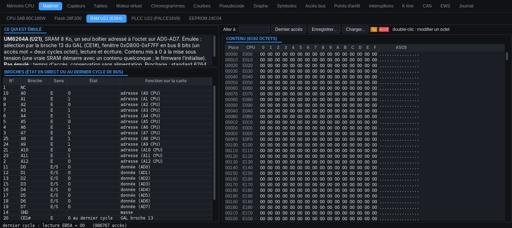
La RAM externe de 8 Ko où le firmware garde ses variables, adressée à l'octet.
- Émulé : sélection par le décodeur PLCC (broche 13), fenêtre 0xD800-0xF7FF en bus 8 bits (un accès mot = deux cycles octet), lecture et écriture. Le contenu est mis à 0 à la mise sous tension (une vraie RAM démarre avec un contenu quelconque ; le firmware l'initialise).
- Pas émulé : temps d'accès, conservation sans alimentation (le contenu est perdu quand le calculateur s'éteint, voir Contact).
- Brochage : standard 6264, 28 broches (CE2 non relevé sur la carte).
Décodeur d'adresse PALCE16V8 (U22)
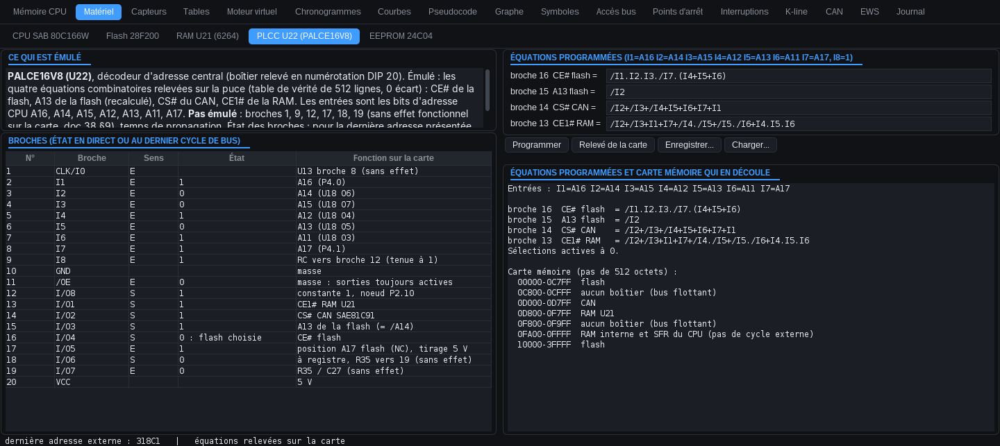
Le décodeur d'adresse central : à partir des bits d'adresse du CPU, il choisit la puce qui répond (flash, CAN ou RAM). La vue donne l'état de ses 20 broches pour la dernière adresse présentée sur le bus externe, ses équations et la carte mémoire qui en découle (flash, CAN 0xD000-0xD7FF, RAM 0xD800-0xF7FF, zones sans boîtier).
- Émulé : les quatre équations relevées sur la puce : sélection de la flash, ligne A13 de la flash (recalculée), sélection du CAN, sélection de la RAM.
- Pas émulé : broches 1, 9, 12, 17, 18 et 19 (sans effet sur la carte), temps de propagation.
Équations modifiables : les quatre sorties (broches 16, 15, 14, 13) s'écrivent avec les entrées I1 à
I8 (I1 = A16, I2 = A14, I3 = A15, I4 = A12, I5 = A13, I6 = A11, I7 = A17, I8 tenue à 1), / pour « non »,
. pour « et », + pour « ou », des parenthèses, et les constantes 0 et 1. Programmer charge les
équations dans la puce : le bus du simulateur décode aussitôt avec elles (une équation fausse est refusée avec la
raison). La carte mémoire se met à jour. Des équations différentes du relevé peuvent empêcher le firmware de trouver
sa flash, sa RAM ou le CAN : une confirmation est demandée. Relevé de la carte remet les équations d'origine ;
Enregistrer… / Charger… : fichier texte, une ligne par broche (14 = /I2+/I3+/I4+I5+I6+I7+I1).
Les équations modifiées ne durent que la session : le relevé revient au lancement suivant.
EEPROM 24C04
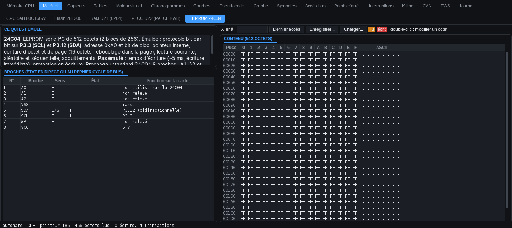
L'EEPROM série I²C de 512 octets (2 blocs de 256) où le calculateur garde ce qui doit survivre à la coupure du contact : adaptations, mémoire des défauts, position de repos du VANOS…
- Émulé : protocole bit par bit sur P3.3 (SCL) et P3.12 (SDA), adresse et bit de bloc, pointeur interne, écriture d'octet et de page (16 octets), lectures courante, aléatoire et séquentielle, acquittements. La ligne du bas donne l'état de l'automate, le pointeur et les compteurs.
- Pas émulé : temps d'écriture (≈ 5 ms, ici immédiat), protection en écriture (broches A1, A2 et WP non relevées).
- Contenu : vierge par défaut (tout à FF), ou chargé depuis un fichier : menu Fichier > EEPROM simulée (voir Contact, post-fonctionnement et EEPROM).
Contrôleur CAN SAE81C91
Le contrôleur du bus CAN moteur, branché sur le bus externe du CPU (fenêtre 0xD000-0xD7FF, choisie par le décodeur PLCC). Le firmware y écrit les trames DME1, DME2 et DME4 et y lit celles de la boîte automatique.
- Émulé : registres et tampons de messages tels que le firmware les utilise, émission toutes les 10 ms, acquittement par les autres calculateurs, erreur passive quand le calculateur est seul, bus-off sur court-circuit.
- Où le voir : onglet CAN (trames décodées, options), zone CAN de l'onglet Mémoire CPU.
Satellite ST9
Le second microcontrôleur de la carte, relié au CPU par la liaison série ASC1. Il mesure la température d'air, les capteurs de cliquetis et les entrées de clim, commande le relais du compresseur, transmet les messages de l'antidémarrage EWS et surveille les étages de sortie.
- Émulé en boîte noire, d'après les messages que le firmware attend (son propre programme n'a pas été lu) : synchronisation et configuration, température d'air (message 0x108), cliquetis (gain reçu dans 0x101, niveau du cylindre renvoyé dans 0x102), clim et relais du compresseur, messages EWS 0x109, diagnostic des 24 étages de sortie (toujours sans défaut).
- Où le voir : fiches de l'onglet Capteurs (température d'air, cliquetis, clim), Cliquetis, onglet EWS ; panne simulée « Satellite ST9 débranché » (code 100).
Les onglets du bas
L'onglet Matériel est décrit avec les puces de la carte.
Mémoire CPU
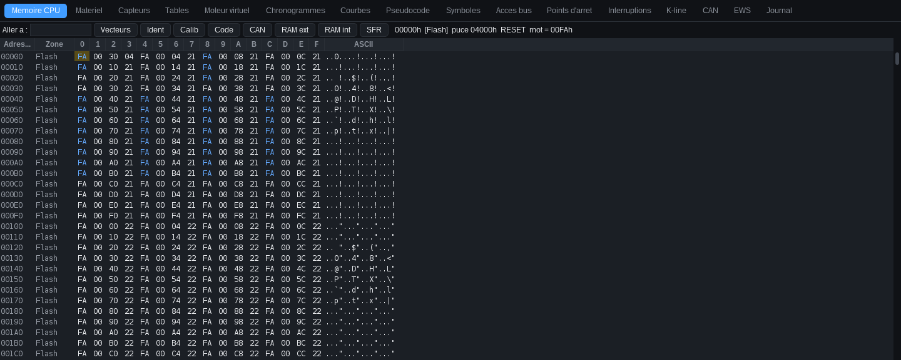
Vue hexadécimale de tout l'espace adressable tel que le CPU le voit : flash (dans l'ordre CPU), contrôleur CAN, RAM externe, RAM interne, registres SFR, zones sans boîtier. Elle complète l'onglet Matériel, qui montre chaque puce séparément. Les boutons sautent aux zones utiles : vecteurs d'interruption, identification, calibration, code, CAN, RAM externe, RAM interne, SFR. La couleur de fond indique la zone ; les octets lus et écrits par le programme sont colorés en direct pendant l'exécution (la couleur s'estompe en 2 s). Clic droit sur un octet : point d'arrêt mémoire en écriture, en lecture ou les deux.
Capteurs : caractéristiques de chaque capteur
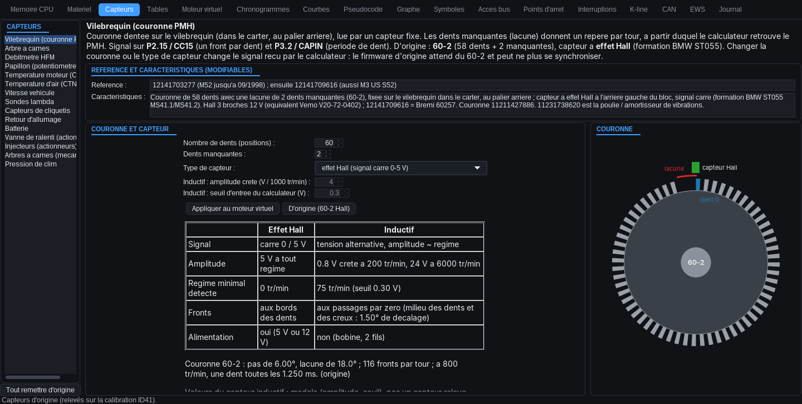
L'onglet Capteurs décrit le matériel qui transforme une grandeur physique en signal pour le calculateur, et permet de le modifier pour simuler un autre capteur. Les valeurs en direct et les courbes ne sont pas ici : elles sont dans l'onglet Moteur virtuel et dans les Courbes. Quinze fiches à gauche : vilebrequin (couronne PMH), arbre à cames, débitmètre HFM, papillon (potentiomètre), température moteur, température d'air, vitesse véhicule, sondes lambda, capteurs de cliquetis, retour d'allumage, batterie, vanne de ralenti, injecteurs, arbres à cames, pression de clim. Chaque fiche donne :
- le principe du capteur et son chemin jusqu'au calculateur (broche, entrée analogique ou satellite) ;
- sa référence et ses caractéristiques. Les références BMW des pièces du M52 (et du M3 US S52 quand elle diffère) sont pré-remplies avec les caractéristiques publiées par les catalogues de pièces et les fabricants (par exemple capteur de vilebrequin 12141703277 à effet Hall, débitmètre Siemens 5WK9600, injecteur Bosch 0 280 150 440 de 14,5 Ω) ; « non publié » quand aucune source n'a été trouvée. Les deux champs se modifient et sont gardés d'un lancement à l'autre ;
- quand le capteur est réglable, ses caractéristiques électriques : Appliquer les prend en compte tout de suite, D'origine remet celles du capteur BMW.
Vilebrequin : nombre de dents de la couronne et nombre de dents manquantes, avec le dessin de la couronne (dents, trou en rouge, position du capteur, dent 0), et le type de capteur : effet Hall (signal carré 0-5 V, présent dès l'arrêt) ou inductif (tension alternative dont l'amplitude croît avec le régime ; amplitude pour 1000 tr/min et seuil d'entrée réglables). Un tableau croise les deux types avec la couronne choisie : signal, amplitude, régime minimal détecté, fronts utilisés, alimentation, pas angulaire, largeur du trou. Les valeurs du capteur inductif sont un modèle (non mesurées). Le firmware MS41 attend une couronne 60-2 : avec une autre couronne il ne se synchronise pas et le moteur ne démarre pas, comme sur la voiture ; avec un capteur inductif dont le seuil est trop haut, il n'y a plus de signal au régime du démarreur.
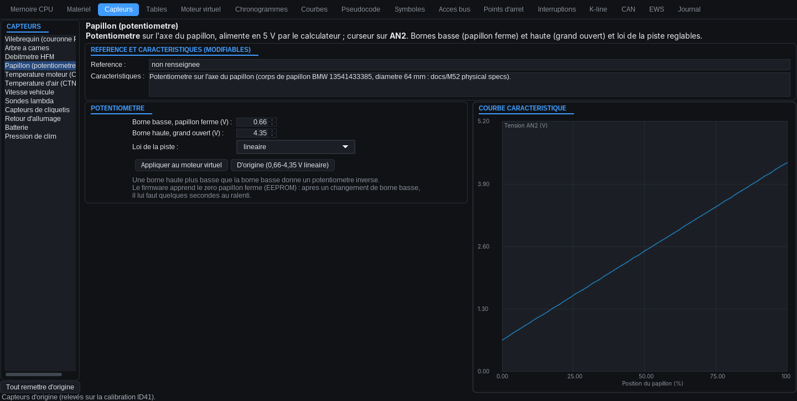
Papillon : tension papillon fermé et grand ouvert, et loi du potentiomètre : linéaire, logarithmique (10 % de la course électrique à mi-course) ou anti-logarithmique ; le graphique montre la tension selon l'ouverture. Vitesse véhicule : impulsions par km. Débitmètre, températures moteur et d'air : la courbe du capteur dans un tableau modifiable (ajouter / retirer des points ; la grandeur physique doit croître strictement), et la tension du débitmètre sans débit. Les courbes d'origine viennent de la calibration ID41, qui décrit les capteurs montés par BMW.
Ces réglages sont gardés d'un lancement à l'autre. Quand l'un d'eux diffère de l'origine, la barre d'état de l'onglet affiche CAPTEURS MODIFIÉS ; Tout remettre d'origine revient aux capteurs BMW (références et textes conservés).
Tables
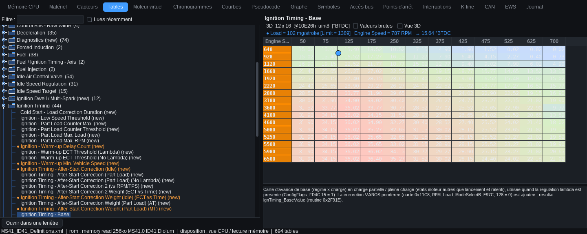
- À gauche, les tables de la définition RomRaider, par catégorie. Filtre pour chercher par nom ; Lues récemment ne garde que les tables que le firmware est en train de lire.
- À droite, la table choisie avec ses axes. Les cellules lues par le CPU sont surlignées en orange, en direct : on voit le point de fonctionnement se déplacer quand le régime ou la charge changent. Valeurs brutes affiche les octets au lieu des valeurs converties.
- Sous la table, la description (rôle, routine du firmware qui la lit).
- Ouvrir dans une fenêtre (ou double-clic sur la table) : la table dans sa propre fenêtre, pour en suivre plusieurs à la fois.
Moteur virtuel
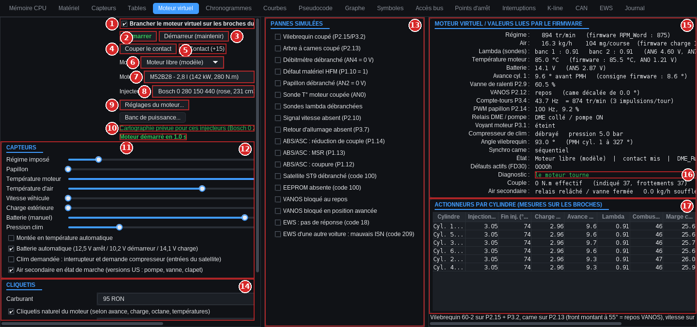
- Brancher le moteur virtuel sur les broches du calculateur (capteurs en entrée, actionneurs mesurés en sortie). Il est branché au lancement du simulateur, en mode Moteur libre (modèle).
- Démarrer : fait tout ce qu'il faut pour que le moteur parte (branche le moteur, lance Run, passe en moteur libre, actionne le démarreur jusqu'à ce que le moteur tienne seul ; abandon au bout de 5 s avec la raison).
- Démarreur (maintenir) : démarreur actionné tant que le bouton est enfoncé. À froid, il faut maintenir 1,5 à 3 s, comme sur une vraie voiture.
- Couper le contact : coupe le +15, comme la clé : le calculateur arrête le moteur, garde le relais principal quelques secondes (post-fonctionnement, sauvegarde de l'EEPROM) puis s'éteint (voir Contact, EEPROM).
- Contact (+15) : état de la clé ; recocher remet le calculateur sous tension (RAM perdue, EEPROM relue, nouvel échange EWS).
- Mode : Arrêt, Démarreur (régime fixe de 220 tr/min), Régime imposé (le curseur fixe le régime, pratique pour explorer les tables), Moteur libre (le régime résulte des combustions et des frottements).
- Moteur monté sur le banc : M52B20, B25, B28, S52B32 (M3 E36 US) ou le moteur personnalisé (cylindrée, remplissage, frottements).
- Injecteurs montés : Bosch 0 280 150 415 (vert), 440 (rose), M3 3.2 US S52 (BMW 13641703819) ou personnalisés, avec leur débit et leur temps mort réels. L'injecteur du M3 US est la même pièce que le 440 du M52B28 (Bosch 0 280 150 440) : mêmes débit et temps mort ; il est choisi d'office avec le moteur S52B32.
- Réglages du moteur… : ouvre la fenêtre Moteur (fiches des M52, moteur et injecteurs personnalisés, pression atmosphérique, pression d'essence, retard du VANOS). En dessous : Banc de puissance… (banc). L'antidémarrage a son propre onglet, EWS.
- Injecteurs de la cartographie : reconnus à sa table de temps mort. Si ceux montés diffèrent, l'écart de mélange attendu est affiché (ex. « mélange appauvri de 24 % »).
- Résultat du démarrage (temps mis, ou raison de l'échec).
- Capteurs : régime imposé, papillon, températures moteur et air, vitesse du véhicule, charge extérieure
(boîte…), batterie, pression de clim ; montée en température automatique, batterie automatique,
clim demandée.
Climatisation : selon le codage de la cartographie, le calculateur lit soit le capteur de pression (au-dessus de 5,7 bar : ralenti clim ; au-dessus de 9,6 bar : compresseur ; au-delà de 24 bar : coupure), soit les entrées « clim demandée ». Quand il autorise le compresseur, le satellite colle le relais, le compresseur prend du couple au moteur (ligne Compresseur de clim des lectures) et le bit 6 de DME1 passe à 1 dans l'onglet CAN. Pied à fond, le calculateur le coupe environ 4 s. La pression au repos vaut 5 bar.
Air secondaire (versions US, cartos MS41.1/MS41.2 comme l'ID12 M3) : après un démarrage à froid (−10 à 40 °C), le calculateur colle le relais de la pompe (broche 35) et ouvre la vanne à dépression du clapet (broche 62), toutes deux pilotées par le satellite ; une pompe électrique souffle de l'air dans les deux collecteurs pendant environ 2 minutes (« ~90 s » dans la formation BMW ST055). Cet air appauvrit les gaz vus par les sondes amont (λ ≈ 1,1-1,5 au lieu de 0,7-0,9) : c'est ainsi que le calculateur vérifie le système. Il oxyde aussi les imbrûlés si le collecteur est assez chaud (post-combustion). La case Air secondaire en état de marche, décochée, simule une pompe ou une vanne en panne. Ligne Air secondaire des lectures : relais, vanne et débit soufflé. Les cartos européennes (ID41) ne commandent jamais l'air secondaire. - Pannes simulées : capteur coupé (vilebrequin, came, débitmètre, papillon, température, sondes lambda, vitesse, retour d'allumage), défaut matériel du HFM, signaux ABS/ASC, satellite débranché, EEPROM absente, EWS muet ou d'une autre voiture, VANOS bloqué au repos ou en avance (code 212). Utile pour provoquer les codes défaut.
- Cliquetis (sous les capteurs) : carburant (91, 95, 98 ou 100 RON), cliquetis naturel du moteur, cliquetis provoqué sur un cylindre ou sur tous (intensité en multiple du bruit du moteur, fréquence en % des cycles), capteur 1 (cylindres 1-2-3) ou capteur 2 (cylindres 4-5-6) débranché. Voir Cliquetis.
- Valeurs du moteur et lectures du firmware, côte à côte : régime, air, lambda, température, avance, vanne de ralenti, VANOS, compte-tours, relais, voyant, compresseur de clim, défauts actifs, couple, air secondaire…
- Diagnostic en clair : « le moteur tourne », ou ce qui l'en empêche (antidémarrage, synchronisation perdue, pas d'injection, mélange noyé, démarreur relâché trop tôt…).
- Actionneurs par cylindre, mesurés sur les broches : durée d'injection, fin d'injection, charge de bobine, avance, lambda du dernier cycle, nombre de combustions, et pour le cliquetis : marge à la limite de cliquetis, nombre de combustions cliquetantes, niveau mesuré par le capteur, retard décidé par le firmware.
Cliquetis
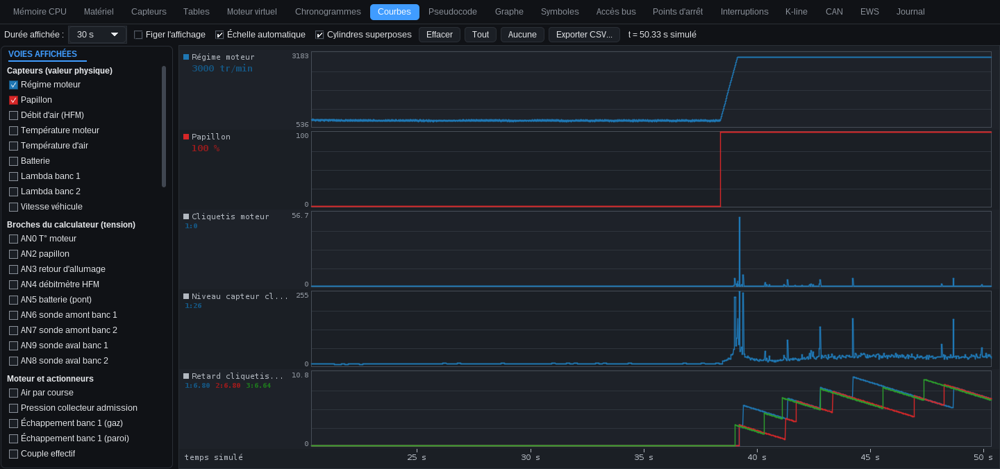
Le cliquetis suit le même chemin que sur la voiture : le moteur cliquette, le capteur le transmet au
satellite, qui mesure chaque cylindre pendant la fenêtre ouverte par le calculateur (P3.6, de 0 à 60°
après le PMH) et renvoie un niveau (message 0x102). C'est le firmware qui compare ce niveau à sa
référence, retarde l'avance du cylindre qui cliquette, puis la ramène peu à peu.
- Cliquetis naturel : le moteur cliquette quand l'avance appliquée dépasse sa limite de cliquetis, qui baisse avec la charge, la température d'air et d'eau, un indice d'octane faible, un mélange pauvre ou une compression plus forte, et monte avec le régime. Les combustions varient d'un cycle à l'autre : le cliquetis est intermittent. Moteur d'origine au 95 : quelques retards de 1 à 2° à pleine charge vers 3000 tr/min ; au 91, retard de 8 à 10° ; au 98, aucun.
- Cliquetis provoqué : ajouté au cliquetis naturel, sur le cylindre choisi. Seul ce cylindre est retardé.
- Capteur débranché : le satellite ne reçoit plus que du bruit électrique pour ses trois cylindres ; le firmware mémorise le code 57 (capteur 1) ou 59 (capteur 2).
- Courbes par cylindre : Cliquetis moteur (intensité de chaque combustion), Marge au cliquetis, Niveau capteur cliquetis (valeur renvoyée par le satellite), Retard cliquetis firmware. Sur la capture : au 91 RON, chaque pic de cliquetis fait reculer l'avance d'un cran, qui remonte lentement jusqu'au cliquetis suivant.
Ce qui est un modèle : la limite de cliquetis du moteur et le traitement interne du satellite (échelle du niveau, bruit mécanique) ne sont pas mesurés sur la voiture ; ils sont réglés pour un comportement réaliste.
Chronogrammes
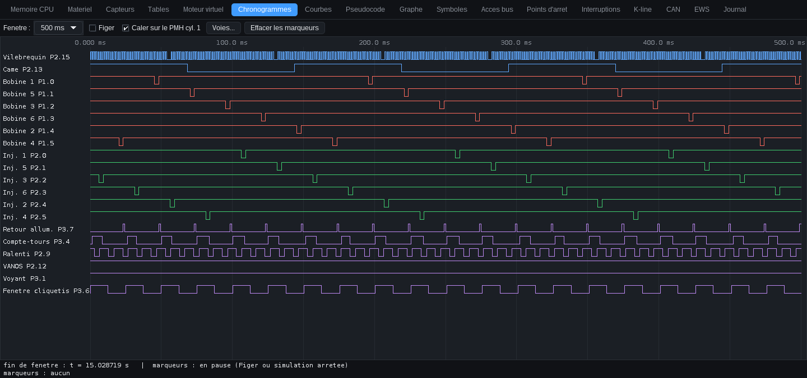
Les signaux logiques sur les broches, comme sur un analyseur logique : vilebrequin 60-2 et came, bobines, injecteurs (ordre d'allumage 1-5-3-6-2-4), retour d'allumage, compte-tours, vanne de ralenti, VANOS, voyant, fenêtre de cliquetis (P3.6). Fenêtre : durée affichée (500 ms par défaut : environ trois cycles moteur au ralenti) ; Caler sur le PMH cyl. 1 (coché par défaut) : la fin de la fenêtre est calée sur le dernier PMH du cylindre 1, l'image reste stable ; Figer : arrête le défilement ; Voies… : choix des signaux. Le survol de la souris ne fait que tracer un trait vertical : il ne déplace pas l'image.
Marqueurs (simulation en pause ou Figer coché) : un clic pose un marqueur, accroché au front le plus proche de la voie cliquée ; un clic droit retire le marqueur le plus proche ; Effacer les marqueurs les retire tous (8 au plus). Sous le tracé : l'écart entre marqueurs successifs, la fréquence correspondante et l'angle vilebrequin (au régime mesuré dans la fenêtre, un front de came par tour). Exemple : deux fronts montants du compte-tours à 900 tr/min sont écartés de 22,2 ms, soit 45 Hz (3 impulsions par tour).
Courbes
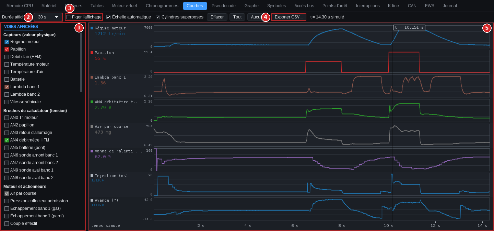
- Voies affichées : capteurs en valeur physique, tensions sur les broches du calculateur (AN0-AN9), moteur et actionneurs, voies par cylindre (injection, avance, charge de bobine, lambda de chaque combustion, cliquetis du moteur, marge au cliquetis, niveau du capteur, retard de cliquetis du firmware, cylindres 1 à 6), valeurs lues dans la RAM du firmware. Le choix est mémorisé.
- Durée affichée : de 5 s à 10 min de temps simulé (l'enregistrement garde les 10 dernières minutes, un point toutes les 10 ms).
- Figer l'affichage pour lire tranquillement ; l'enregistrement continue. Échelle automatique ajuste chaque piste aux valeurs affichées (sinon : plage fixe de la voie). Les tensions des broches (0 à 5,2 V, pleine échelle du convertisseur) et la batterie (0 à 16 V) gardent toujours leur échelle, marquée (fixe). Cylindres superposés : les cylindres cochés d'une même grandeur sur une seule piste, une couleur par cylindre, avec la valeur de chacun.
- Exporter CSV : tout l'enregistrement, toutes les voies (séparateur
;et virgule décimale : s'ouvre directement dans Excel). - Pistes : une par voie, avec sa propre échelle et sa valeur actuelle. En survolant avec la souris, un curseur donne la valeur de toutes les pistes à l'instant pointé.
Sur la capture : deux coups d'accélérateur. On voit le régime monter, l'air et la tension du débitmètre suivre, la vanne de ralenti se fermer, puis la coupure d'injection en décélération (lambda au maximum).
Pseudocode
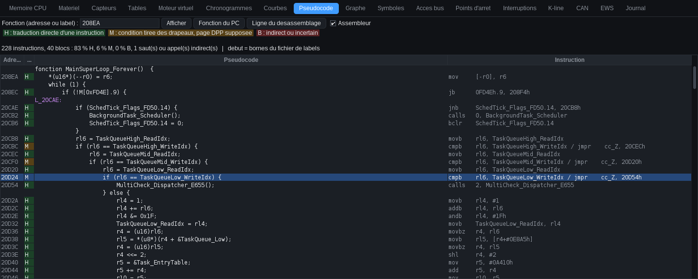
L'onglet Pseudocode traduit une fonction du firmware en pseudo-C, ligne par ligne, avec l'instruction d'origine à droite. Il est produit par le désassembleur du simulateur (pas par IDA). Saisir une adresse ou un label, ou utiliser Fonction du PC (la fonction en cours d'exécution) ou Ligne du désassemblage (la ligne sélectionnée en haut) ; le début de la fonction vient des bornes du fichier de labels ; sans elles, il est deviné (après le retour qui précède) et c'est indiqué. Double-clic sur une ligne : l'instruction dans le désassemblage. À l'arrêt, la ligne du PC est surlignée.
- H (vert) : traduction directe d'une instruction (affectation, opération, bit, appel direct, retour).
- M (orange) : condition reconstruite à partir des drapeaux de l'instruction précédente sur le même chemin
(comparaison, soustraction…), ou accès mémoire par une page DPP 0-2 supposée constante (calibration
CAL_xxxx…). - B (rouge) : saut ou appel indirect (cible inconnue), drapeaux venus d'un autre chemin, octets non décodés.
Structure : le pseudocode est reconstruit à partir du graphe de flot de la fonction (onglet Graphe) :
if / else if / else jusqu'au point où les branches se rejoignent, boucles
while (condition), do … while (condition) ou while (1) avec break et
continue. La comparaison qui précède un saut disparaît dans la condition (cmpb rl4, X puis
jmpr cc_C donnent if (rl4 < X)), et une suite de tests qui mènent au même endroit devient une
seule condition (if (a || b || c)). Il reste un goto quand le code saute dans une partie déjà écrite
(fin commune à plusieurs chemins, comme le fait le compilateur) : sur les 494 fonctions de l'ID41, 73 % n'en ont aucun.
Les noms viennent des labels (fichier chargé, labels automatiques des vecteurs, SFR) ; un pointeur vers une table nommée
s'écrit &Nom (r12 = &VANOS_OnOff_HeavyThrottle) ; sinon M[0xE9B6] pour la RAM et
CAL_01F7 pour la calibration. Le commentaire de la fonction (fichier de labels) est affiché au-dessus. Sur
les 314 fonctions appelées du firmware ID41 : environ 79 % de lignes H, 9 % M, 0,2 % B (les comparaisons repliées dans
les conditions ne comptent plus comme lignes).
Graphe
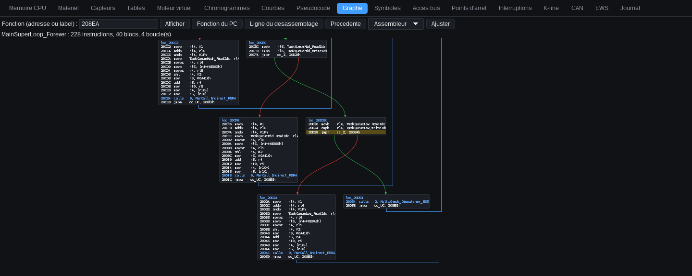
L'onglet Graphe montre une fonction comme la vue graphe d'IDA : un rectangle par bloc de base (suite d'instructions sans saut), relié à ses successeurs. Flèche verte : saut pris ; rouge : saut non pris (on continue à l'instruction suivante) ; bleue : passage sans condition. Les flèches de boucle (retour vers un bloc plus haut) passent à droite des blocs. Le bloc d'entrée est encadré en bleu, celui du PC en vert, l'instruction du PC surlignée. Contenu des blocs : Assembleur ou Pseudocode (choix dans la barre). Même choix de fonction que dans l'onglet Pseudocode, plus Précédente. Molette : zoom autour de la souris ; glisser : déplacer ; Ajuster : toute la fonction à l'écran ; double-clic sur un appel (en bleu) : graphe de la fonction appelée ; double-clic sur une autre ligne : l'instruction dans le désassemblage. Les blocs sont rangés en couches (plus long chemin depuis l'entrée) et placés pour limiter les croisements.
Symboles
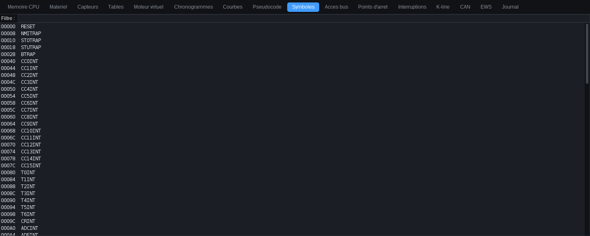
Liste des noms connus (vecteurs, registres, labels chargés par Fichier > Charger des labels). Filtre pour chercher ; double-clic pour afficher l'adresse dans le désassemblage.
Labels de chaque logiciel : au chargement d'un full read, le simulateur calcule l'empreinte de son programme
(zone 0x18000-0x3FFFF, la même pour toutes les voitures d'un même logiciel, quelle que soit la calibration) et charge
tout seul le fichier de labels qui lui correspond dans data/labels (liste dans index.csv) ; le
journal l'indique. Un fichier choisi à la main par Fichier > Charger des labels reste en place. Les labels de
l'ID41 (faits dans IDA) ont été reportés sur les autres logiciels (ID12 M3, ID42, ID59, ID60) par comparaison du code :
chaque fonction est retrouvée par la ressemblance de ses instructions (adresses masquées), puis les appels, les variables
RAM et les tables de calibration suivent l'alignement des instructions. Environ 91 à 94 % des labels sont reportés ; le
rapport (data/labels/rapports) donne pour chacun la méthode et le score. Les adresses changent d'un logiciel à
l'autre (le régime est en 0FAE4 sur l'ID41, en 0FC3A sur l'ID12, l'ID42 et l'ID60) ; elles ont été
vérifiées moteur tournant (régime, température d'eau, tension batterie lus en RAM). Pour refaire les fichiers :
./outils/labels_versions.sh.
Noms automatiques propres au CPU, sans fichier de labels : chaque vecteur matériel saute vers une table de relais
puis vers son gestionnaire ; le simulateur suit ces sauts au chargement du full read et nomme CC15INT_relais,
CC15INT_isr, RESET_entree… Un vecteur qui saute sur lui-même (source jamais armée par le programme)
est nommé …_boucle. Les pointeurs PEC de la RAM interne (SRCP0-DSTP7) et les registres
SFR sont nommés aussi. Un label chargé depuis un fichier reste prioritaire.
Accès bus
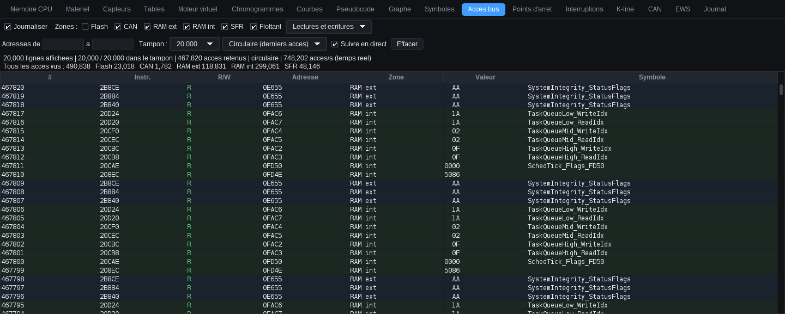
Journal des lectures (R) et écritures (W) de données faites par le programme : numéro d'ordre, instruction qui accède, adresse, zone, valeur, symbole. Les registres R0-R15, la pile et la lecture du code ne sont pas journalisés.
- Filtres : zones (flash, CAN, RAM externe, RAM interne, SFR, zones non câblées), Lectures / Écritures,
plage d'adresses en hexa (bornes incluses, vide = tout ; valeur en rouge si elle n'est pas valide).
Les filtres agissent à la capture : le tampon ne se remplit qu'avec les accès retenus. Exemple : seule la zone
RAM int et la plage
FB26-FB2Bpour suivre le retard de cliquetis des six cylindres. Resserrer un filtre masque aussi les lignes déjà capturées ; l'élargir ne fait pas revenir les accès qui n'ont pas été gardés. - Tampon de 20 000, 100 000 ou 500 000 lignes. Le firmware fait environ 600 000 accès de données par seconde simulée : sans filtre, 20 000 lignes couvrent environ 30 ms. Circulaire garde les derniers accès ; Arrêt quand plein garde les premiers après Effacer et l'indique (« TAMPON PLEIN »).
- Compteurs : lignes affichées, remplissage du tampon, accès retenus, accès par seconde, et sur la deuxième ligne tous les accès vus par zone, filtrés ou non. Ils continuent pendant l'exécution, même tampon plein.
- Suivre en direct : la liste se met à jour 4 fois par seconde pendant l'exécution ; décoché, seuls les compteurs bougent et la liste est mise à jour à la pause.
- Double-clic : dans la colonne Instr., va au code ; ailleurs, montre la donnée.
Points d'arrêt
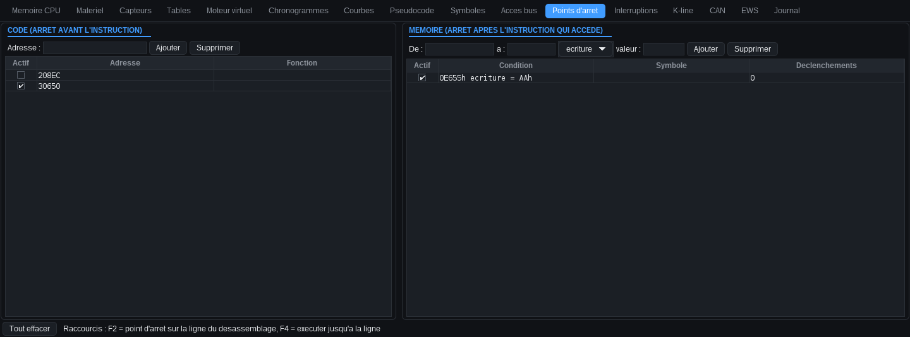
- Code (à gauche) : arrêt avant l'instruction à l'adresse. La case Actif permet de le garder sans qu'il serve.
- Mémoire (à droite) : arrêt après l'instruction qui lit ou écrit une plage d'adresses, éventuellement
seulement pour une valeur donnée. Exemple :
E655écrit avecAA(fin des contrôles de CRC au démarrage, configuration du satellite validée). La colonne Déclenchements compte les arrêts.
Interruptions
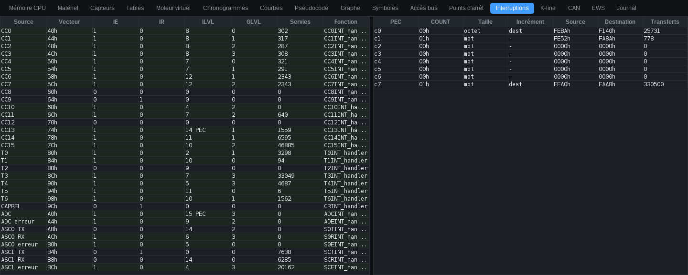
À gauche, chaque source d'interruption (CAPCOM CC0-CC15, timers T0-T6, ADC, liaisons série…) avec son vecteur, ses bits d'autorisation (IE) et de demande (IR), ses niveaux de priorité et le nombre de fois où elle a été servie. À droite, les 8 canaux PEC (transferts automatiques sans interruption) : compteur, taille, source, destination.
K-line
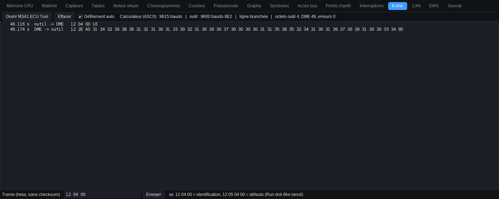
Le trafic sur la ligne K virtuelle, trame par trame, avec l'heure simulée et le sens (outil → DME, DME → outil). La
barre du haut donne les débits (calculateur et outil, 9600 bauds 8E2) et les compteurs. En bas, on peut envoyer
une trame DS2 à la main : taper les octets en hexa sans le checksum, il est ajouté automatiquement. Exemples :
12 04 00 identification, 12 05 04 00 lecture des défauts. Run doit être lancé pour que le calculateur réponde.
CAN
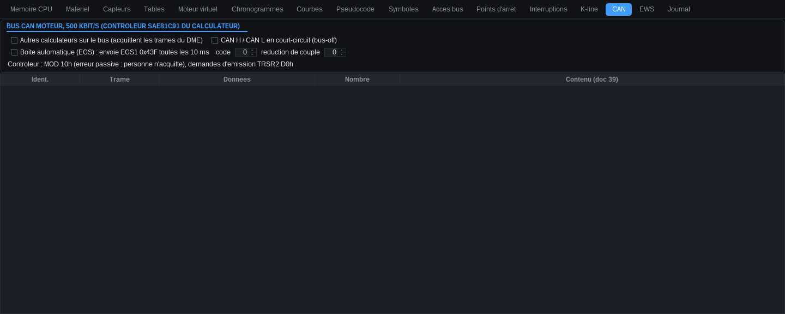
Le bus CAN moteur (500 kbit/s) et le contrôleur SAE81C91 du calculateur. Le tableau montre la dernière trame de
chaque identifiant, décodée : DME1 0x316 (régime, charge), DME2 0x329 (températures
moteur et air, vitesse, papillon), DME4 0x545 (refus EWS, consommation, surchauffe), toutes les 10 ms.
Options :
- Autres calculateurs sur le bus : ils acquittent les trames. Décoché (réglage au lancement), le calculateur est seul, comme sur un banc : ses trames restent en attente et le contrôleur passe en erreur passive.
- Court-circuit CAN H / CAN L : bus-off. Le firmware met le contrôleur en reset et le réinitialise quand le court-circuit disparaît (s'il surveille le bus : seulement avec une boîte automatique codée ou détectée).
- Boîte automatique (EGS) : envoie EGS1
0x43F(code de rapport, réduction de couple). Le calculateur ne détecte la boîte que dans la demi-seconde qui suit la mise sous tension : cocher, puis couper et remettre le contact. Décocher ensuite : message absent, code 217. Les codes 216 et 219 existent dans le firmware mais leur pas d'anti-rebond vaut 0 dans la calibration ID41 : ils ne sont jamais mémorisés.
EWS (antidémarrage)
Onglet EWS en bas de la fenêtre principale (détachable comme les autres), aussi ouvert par Outils > EWS (antidémarrage). Couper et remettre le contact ne met pas la simulation en pause : calculateur éteint, le temps continue de passer et la remise du contact le rallume (nouvel échange EWS).
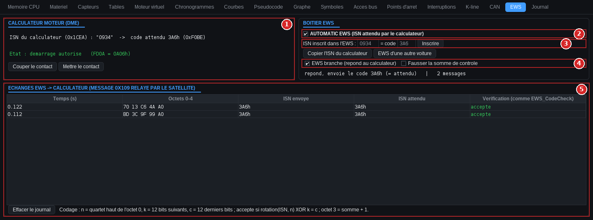
- Calculateur : l'ISN inscrit dans le calculateur (4 caractères à l'adresse
0x1CEA) et le code de 12 bits qu'il en tire et attend de l'EWS (0xF0BE) ; l'état de l'autorisation de démarrage ; boutons pour couper et remettre le contact (l'échange a lieu à chaque mise sous tension). - AUTOMATIC EWS, cochée par défaut : le boîtier EWS prend l'ISN attendu par le calculateur, le démarrage est toujours autorisé.
- ISN inscrit dans l'EWS, quand la case est décochée : 4 chiffres (ou le code 12 bits en hexa), Inscrire. Copier l'ISN du calculateur, ou EWS d'une autre voiture pour un ISN différent : refus de démarrage et code 209.
- Pannes : EWS débranché (ne répond plus : refus et code 18), somme de contrôle faussée (code 18).
- Journal des échanges : chaque message
0x109que l'EWS envoie au calculateur par le satellite, avec l'ISN envoyé, l'ISN attendu et le résultat de la même vérification que le firmware (EWS_CodeCheck).
Le message change à chaque envoi (code tournant : 4096 formes pour un même ISN), le calculateur vérifie toujours la même relation. Le détail du codage est rappelé sous le journal.
Journal
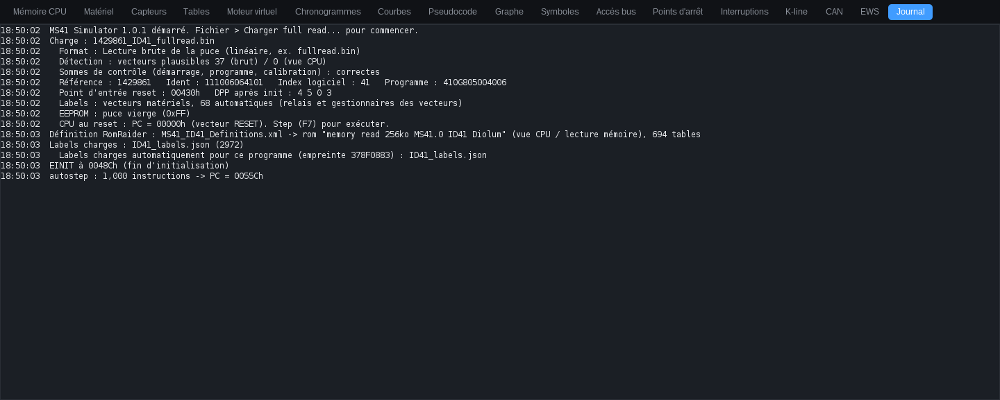
Messages du simulateur : chargements, choix de la définition et problèmes relevés dans le XML, traps, arrêts sur point d'arrêt, connexion de MS41 ECU Tool… Au chargement d'un full read, le Journal signale les sommes de contrôle fausses : le calculateur posera alors le code 100 (raison 0x400), comme un vrai MS41.
Moteur, banc et réglages
Fenêtre Moteur : caractéristiques et réglages
Ouverte par le bouton Réglages du moteur… de l'onglet Moteur virtuel, ou par Outils > Moteur : caractéristiques et réglages. Sa position est mémorisée.
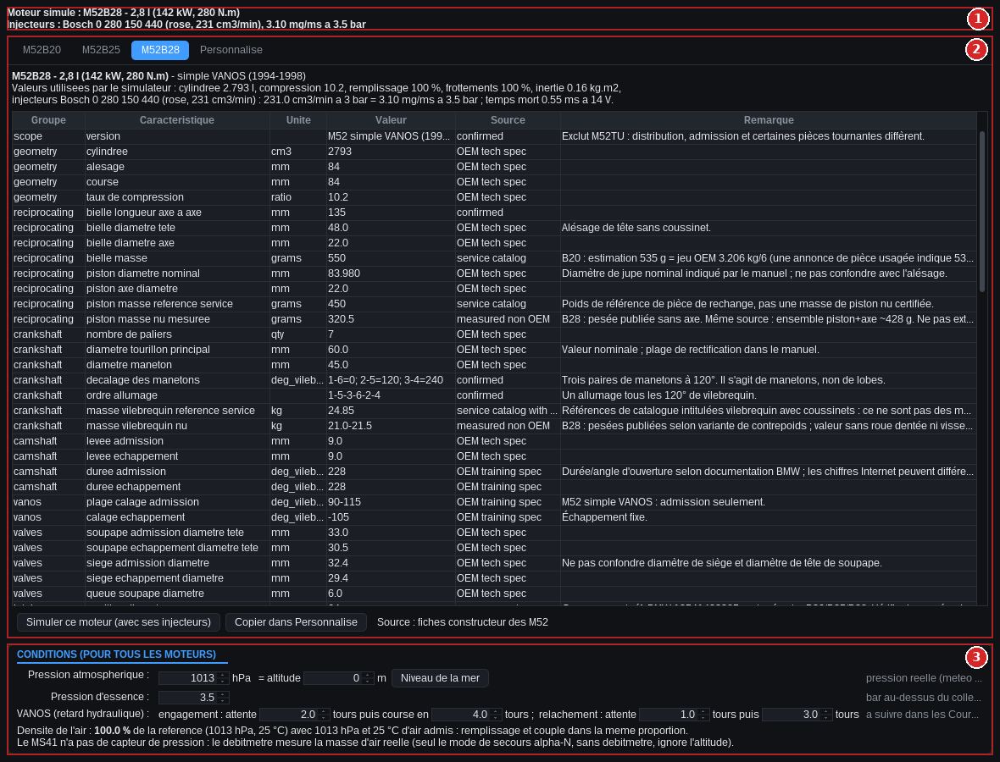
- Moteur et injecteurs simulés en ce moment, avec le débit réel des injecteurs à la pression d'essence réglée.
- Onglets : une fiche par moteur (M52B20, B25, B28 et S52B32) avec les caractéristiques constructeur (géométrie, embiellage, vilebrequin, arbres à cames, VANOS, soupapes, couple et
puissance, injecteurs…), et l'onglet Personnalisé. S52B32 (M3 E36 US 1996-1999) : 3152 cm³,
86,4 × 89,6 mm, compression 10,5, 179 kW à 6000 tr/min et 320 N·m à 3800 tr/min, même bloc et même culasse que le M52,
injecteurs BMW 13641703819 (Bosch 0 280 150 440, entrée « M3 3.2 US S52 » de la liste), bielles de 135 mm comme le B28,
vilebrequin propre au S52. Sa fiche vient des mêmes fichiers que celles des M52 (colonne s52b32 de
docs/M52 physical specs) ; chaque valeur porte sa source : manufacturer_reported (BMW), common_part_spec (pièce commune), measured_non_OEM (mesures et forums), estimated (hypothèse, souvent « pris égal au M52 ») ou not_available quand rien de fiable n'a été trouvé (diamètres du vilebrequin, masses, plage du VANOS, calage de l'échappement, régime de ralenti…). Les arbres à cames sont pris comme le jeu Schrick 252/244 donné équivalent au S52 US (hypothèse) : les 252° / 244° comptent des rampes longues, la fiche Schrick donne 219° / 206° à 1 mm de levée ; le simulateur utilise donc les durées équivalentes 235° / 222° (son modèle atteint 1 mm 8° après l'ouverture), soit un croisement au ralenti proche du M52. Sur une fiche : Simuler ce moteur (avec ses injecteurs d'origine) ou Copier dans Personnalisé comme point de départ. - Conditions, valables pour tous les moteurs : pression atmosphérique réelle (en hPa, ou par l'altitude, les deux sont liées) et pression d'essence (régulateur). La densité de l'air qui en résulte (avec la température d'air) est affichée : le remplissage et le couple suivent la même proportion. Le MS41 n'a pas de capteur de pression : le débitmètre mesure la masse d'air réelle, le calculateur dose donc correctement en altitude.
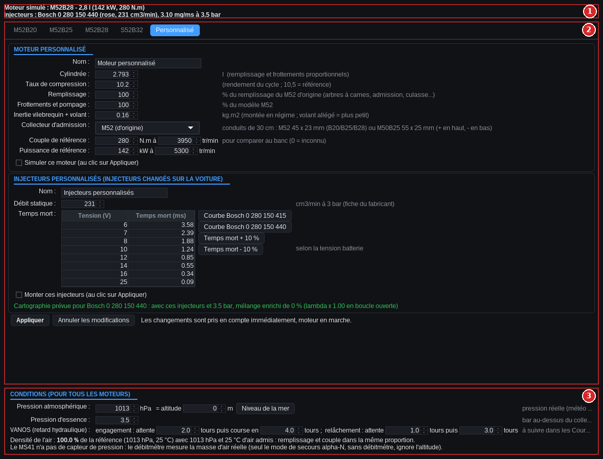
L'onglet Personnalisé décrit un moteur modifié et des injecteurs changés sur la voiture :
- Moteur : cylindrée, taux de compression (rendement du cycle), remplissage en % de celui du M52 d'origine (arbres à cames, admission, culasse…), frottements, inertie du vilebrequin et du volant (volant allégé : le régime monte plus vite), collecteur d'admission (M52 d'origine, identique sur B20/B25/B28, ou collecteur de M50B25 : conduits de 30 cm de 55 × 25 mm, comme le port de la culasse, au lieu de 45 × 23 mm ; environ +7 kW vers 6000 tr/min et −2 % de couple vers 2500-3000 tr/min sur un B28), couple et puissance de référence pour comparer au banc.
- Injecteurs : débit statique (cm³/min à 3 bar, fiche du fabricant) et courbe de temps mort selon la tension (courbes Bosch 415 / 440 en point de départ, ±10 %). La ligne du bas indique le décalage de mélange attendu par rapport aux injecteurs prévus par la cartographie : par exemple, des injecteurs de 300 cm³/min sur une cartographie prévue pour les 440 (231 cm³/min) enrichissent le mélange de 30 %.
- Appliquer enregistre ces valeurs ; les cases Simuler ce moteur et Monter ces injecteurs les mettent en service. L'effet est immédiat, moteur en marche (à suivre dans les Courbes : lambda, couple).
VANOS (retard hydraulique), dans les conditions : le calculateur commande l'électrovanne en tout-ou-rien, mais le mécanisme met quelques tours à réagir puis à décaler la came (pression d'huile). Quatre réglages, en tours moteur : attente puis course à l'engagement (2 + 4 par défaut), attente puis course au relâchement (1 + 3). La position réelle de la came se suit dans les Courbes (voie VANOS) ; le firmware la mesure et en tient compte (corrections de carburant et d'avance, code 212 si elle ne suit pas la commande). Le VANOS décale réellement l'arbre d'admission dans le moteur virtuel (axe de came 115° → 90° après le PMH sur le B28) : le remplissage et les gaz résiduels sont calculés degré par degré à partir des 24 soupapes (2 admission de 33 mm et 2 échappement de 30,5 mm par cylindre), du piston, des conduits du collecteur et du calage (aucun pourcentage imposé). Came avancée : meilleur remplissage à bas et moyen régime, moins bon au-delà de ~3900 tr/min, et plus de gaz résiduels au ralenti (VANOS bloqué en avance : ralenti bas et irrégulier). Les écoulements à contre-sens du croisement (gaz brûlés repoussés dans le conduit d'admission ou aspirés depuis l'échappement) passent moins bien que l'écoulement normal : leur coefficient est recalé sur une mesure publiée (moteur 4 soupapes à calage variable : 35 % de gaz résiduels à 1000 tr/min, 0,44 bar et 42° de croisement), et la combustion reste stable jusqu'à ~27 % de gaz brûlés. Les logiciels récents (ID12 M3, ID42, ID60) engagent le VANOS au ralenti moteur froid juste après le démarrage : le moteur virtuel le supporte maintenant.
Banc de puissance
Ouvert par le bouton Banc de puissance… de l'onglet Moteur virtuel, ou par Outils > Banc de puissance. Un frein à courants de Foucault virtuel tient le régime demandé : moteur stabilisé, le couple de freinage est égal au couple du moteur ; c'est ce que mesure le banc. Le firmware ne sait rien du banc : il voit un moteur à pleine charge.
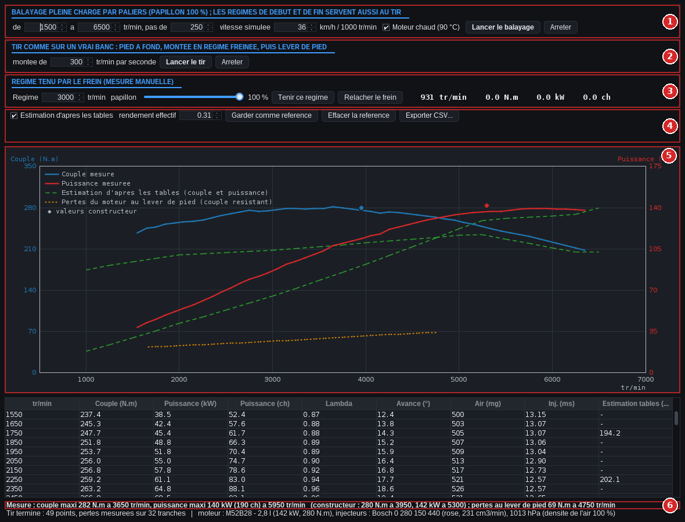
- Balayage pleine charge par paliers : papillon à 100 %, paliers de régime (début, fin, pas). À chaque palier, le frein stabilise le régime puis mesure pendant 0,5 s. Le moteur est démarré si besoin. La vitesse simulée suit le régime (36 km/h pour 1000 tr/min ≈ 4e d'une E36) : véhicule à l'arrêt, le firmware poserait un défaut de vitesse à pleine charge. Moteur chaud impose 90 °C pendant le balayage. Tout est remis comme avant à la fin.
- Tir, comme sur un vrai banc : le moteur est tenu au régime de début, pied à fond, puis le frein le laisse monter à vitesse constante (montée de … tr/min par seconde, 300 par défaut ; un banc moteur travaille entre 200 et 500) jusqu'au régime de fin. Le couple est mesuré en continu, par tranches de 100 tr/min : couple du frein + inertie du moteur × accélération. Au régime de fin, la pédale est relâchée et le frein ramène le moteur au régime de début (1000 tr/min par seconde) ; au passage, le banc mesure les pertes du moteur entraîné (frottements + pompage, injection coupée), tracées en pointillés orange. On entend tout le tir. Pendant une montée continue, le calculateur ne voit pas exactement la même chose qu'en paliers (enrichissement, avance) : les deux mesures peuvent différer de quelques %.
- Régime tenu : mesure manuelle à un régime et une ouverture de papillon choisis (le papillon se règle pendant la mesure) ; couple, puissance en kW et en ch affichés en direct. Relâcher le frein rend le moteur libre.
- Options : l'estimation d'après les tables (voir ci-dessous) et son rendement effectif ; Garder comme référence fige la courbe en gris pour comparer après une modification (cartographie, injecteurs, VANOS, altitude…) ; Exporter CSV enregistre les points mesurés et l'estimation.
- Courbes : couple (bleu, échelle de gauche) et puissance (rouge, à droite) mesurés, estimation en pointillés verts, pertes au lever de pied en pointillés orange (tir), valeurs constructeur en losanges. Sous le graphique, le tableau des points : lambda, avance, air et durée d'injection relevés pendant la mesure.
- Résumé : couple maxi et puissance maxi mesurés, comparés au constructeur ; après un tir, les pertes au régime de puissance maxi. Exporter CSV y ajoute la courbe des pertes.
Estimation d'après les tables. Comme le calcul connu pour les diesels TDI (couple ∝ quantité injectée), on déduit le couple d'un moteur essence de la cartographie seule : à pleine charge, l'air par cylindre vient de la table alpha-N (colonne papillon maxi), l'essence brûlée est limitée par l'air (λ = 1, l'excès d'enrichissement ne donne rien), puis couple = 6 cylindres × essence brûlée × 43 MJ/kg × rendement effectif / 4π. Le rendement effectif (0,31 par défaut, ordinaire pour un moteur essence atmosphérique de cette époque) est réglable. L'avance et la durée d'injection des tables sont données pour information. C'est une estimation : l'air vient de la table alpha-N, qui est la valeur de repli du mode dégradé (débitmètre en panne), volontairement grossière : elle sous-estime le remplissage réel d'environ 7 % entre 2000 et 4500 tr/min. À 4000 tr/min l'estimation donne environ 80 % du couple mesuré au banc virtuel.
Au banc virtuel, le M52B28 donne environ 290 N·m et 142 kW maxi à 20 °C (constructeur 280 N·m et 142 kW). Le moteur virtuel respire selon son propre modèle physique (papillon, vanne de ralenti, collecteur, renouvellement de la charge calculé avec le calage réel des arbres à cames) : modifier la cartographie change ce que le calculateur commande, pas la façon dont le moteur respire.
Contact (+15), post-fonctionnement et EEPROM
Comme sur la voiture, couper le contact ne coupe pas tout de suite le calculateur : le firmware voit la tension tomber (état « contact coupé, extinction »), arrête injection et allumage, maintient le relais principal pendant le post-fonctionnement (6 s après un arrêt moteur), écrit dans son EEPROM ce qu'il doit garder (adaptations, mémoire des défauts, position de repos du VANOS…), puis relâche le relais : le calculateur s'éteint. La ligne Etat de l'onglet Moteur virtuel le montre (« contact coupé, post-fonctionnement », puis « calculateur éteint »). Remettre le contact rallume le calculateur : la RAM est perdue, le firmware relit l'EEPROM et refait l'échange EWS. Un défaut mémorisé avant la coupure est donc toujours là au redémarrage.
EEPROM vierge par défaut : à chaque chargement de full read, la 24C04 est vierge (tout à FF), comme une
puce neuve. Menu Fichier > EEPROM simulée (24C04) : fichier de départ (une EEPROM de 512 octets, lue par
exemple sur un vrai calculateur, chargée à chaque full read sans être modifiée) ; garder l'EEPROM de chaque full read
(un fichier par full read dans le dossier eeprom du simulateur, relu au chargement et enregistré dès que le firmware l'écrit) ;
enregistrer sous un autre nom, charger une EEPROM maintenant, ou l'effacer. Un chargement ou un effacement prend effet à la
remise du contact.
Son du moteur (menu Settings)
Le moteur virtuel s'entend : le son est synthétisé en direct à partir de ce que fait le moteur, pas d'un enregistrement. À chaque temps moteur (trois par tour, ordre 1-5-3-6-2-4), la bouffée de gaz du cylindre, d'autant plus forte que la combustion a été forte, passe dans un modèle de la ligne d'échappement : collecteur 6-2 (six primaires de 32 mm et 0,60 m réunis en deux tubes de 63 mm et 3,5 m, un par banc 1-2-3 / 4-5-6), puis le silencieux, dont les chambres et chicanes étalent chaque bouffée et dont la laine absorbe les aigus : le son est plus rond. Un cylindre qui ne brûle pas ne donne qu'un souffle : on entend les ratés, le démarreur, le régime qui monte ou qui cale. Chaque bouffée a la forme d'une vidange réelle (pic de pression à l'ouverture de la soupape puis refoulement par le piston) : le ralenti reste bien présent, même sur un haut-parleur d'ordinateur. L'admission ajoute un grondement quand le papillon est ouvert.
Démarreur : grondement grave du moteur électrique (environ 11 tours d'induit par tour de vilebrequin, ≈ 75 Hz), qui ralentit à chaque compression (trois par tour). Une fois le moteur lancé, la roue libre du pignon décroche : le démarreur tourne seul à sa vitesse libre tant qu'on le garde. Raté : le cylindre qui ne brûle pas ne donne qu'un souffle sourd, on entend le trou dans le rythme.
Pops au lever de pied : en décélération, le calculateur coupe l'injection ; le carburant resté sur les parois continue d'arriver dans les cylindres sans brûler, avec de l'air. Si le collecteur est assez chaud (au moins 620 °C entre les gaz et la paroi), ce mélange s'enflamme par moments. La température de l'échappement est simulée par banc : gaz au collecteur (≈ 450 °C au ralenti, ≈ 850 °C à pleine charge, plus avec un allumage retardé) et paroi du collecteur, qui chauffe en une dizaine de secondes de charge et refroidit lentement. Échappement froid ou simples coups d'accélérateur : peu ou pas de pops ; après une montée en charge : quelques pops au lever de pied. Pas de pops à l'accélération : tous les cylindres brûlent, et l'oxygène d'un mélange un peu pauvre oxyde les imbrûlés sans bruit ; il faut une charge qui ne brûle pas (coupure d'injection au lever de pied ou au limiteur, raté). Le papillon suit la pédale comme par le câble (≈ 0,1 s pour toute la course), même si on déplace le curseur d'un coup. Les deux températures sont dans les Courbes.
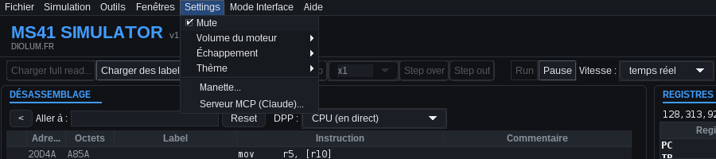
Menu Settings : Mute coupe le son (le choix est gardé d'un lancement à l'autre) ; Volume du moteur ; Thème ; Échappement. Le son suit le régime en temps réel ; en vitesse de simulation « Max », il reste joué au régime du moment.
Settings > Échappement : trois sons, réglés d'après des enregistrements de 328i E36 (gardé d'un lancement à l'autre) :
- Origine (silencieux BMW) : grave et feutré au ralenti, glouglou marqué, s'éclaircit en charge (le silencieux laisse passer plus d'aigu quand le débit des gaz augmente) ;
- X-pipe + silencieux race (type Supersprint) : même ligne que le silencieux race, mais le X égalise les bouffées des deux bancs (son plus régulier) et laisse passer plus d'aigu ;
- Silencieux race (type Eisenmann) : rond au ralenti, grave de caisse vers 60 Hz, différences entre cylindres marquées, s'ouvre vite en montant en régime.
Le son vient presque entièrement des bouffées des cylindres. Il s'y ajoute un souffle léger (bruit des gaz qui suit chaque bouffée), volontairement très en dessous du son du moteur. Le grain vient de ce qui varie d'une bouffée à l'autre : la force de chaque combustion change un peu d'un cycle à l'autre et chaque cylindre est légèrement différent. Les tubes renvoient une partie de l'onde depuis le silencieux (résonances des tubes), le silencieux filtre les aigus et la caisse ajoute une résonance grave propre à chaque échappement. À un coup d'accélérateur, le moteur virtuel peut rater un ou deux cycles (le carburant n'a pas encore rattrapé l'air) : on entend une bouffée plus faible, pas un trou.
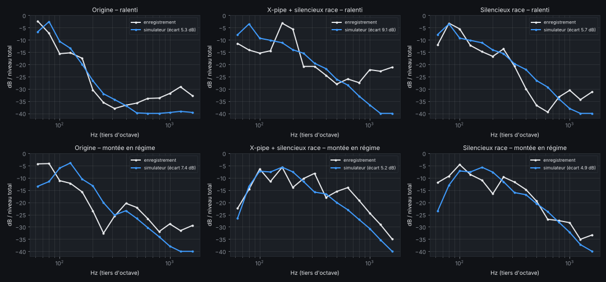
Sur la figure : la répartition de l'énergie par tiers d'octave (de 63 Hz à 1,6 kHz) des enregistrements (blanc) et du simulateur (bleu), au ralenti et en montée en régime (2000 à 4500 tr/min). Les écarts restants viennent en partie des enregistrements : vidéos prises avec des micros et à des distances différentes, bruit ambiant, et ralenti différent (l'enregistrement du X-pipe tourne vers 1000 tr/min, le moteur virtuel vers 700). Les réglages finaux ont été choisis à l'écoute. Le niveau sonore de chaque échappement n'est pas mesurable sur ces vidéos.
Manette (menu Settings)
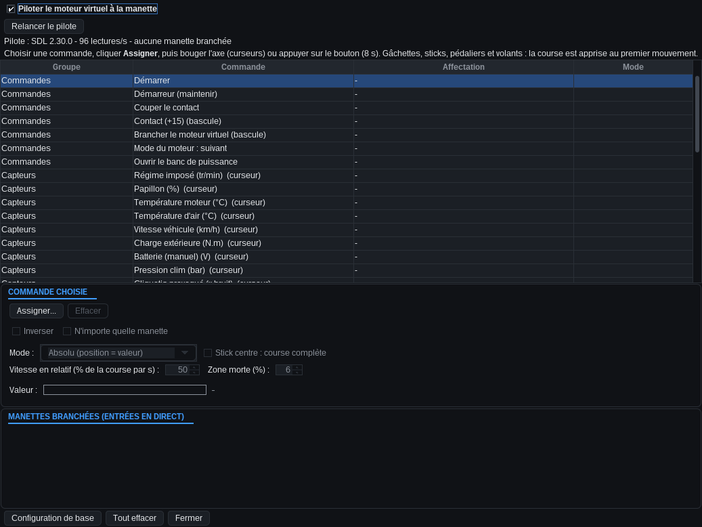
Manette">Menu Settings > Manette… : les curseurs du moteur virtuel (papillon, régime imposé, températures, vitesse, charge, batterie, pression de clim) se pilotent avec les axes d'une manette, et les commandes (Démarrer, démarreur, couper le contact, contact, brancher le moteur, mode, cases d'options et pannes simulées) avec ses boutons. Toute manette reconnue par le système convient : manette Xbox, PlayStation ou Switch, manette générique, volant, pédalier.
- Brancher la manette : elle apparaît en bas de la fenêtre avec ses axes (barres) et ses boutons (pastilles), en direct.
- Choisir une commande dans la liste, cliquer Assigner…, puis bouger l'axe à fond ou appuyer sur le bouton (8 s). La course de l'axe est apprise au premier mouvement : gâchette (repos en bas), stick (repos au centre), pédale.
- Options de la commande choisie : Inverser ; N'importe quelle manette (sinon, seulement la manette utilisée à l'affectation) ; pour un curseur, mode Absolu (la position de l'axe donne la valeur, ex. gâchette = papillon) ou Relatif (le stick fait monter ou descendre la valeur, et elle reste quand on le lâche : pratique pour les températures ou la vitesse), Stick centré : course complète (tout le débattement du stick au lieu d'un demi), vitesse en relatif et zone morte. La jauge Valeur montre ce que produit l'axe.
Configuration de base (manette reconnue) : gâchette droite = papillon, gâchette gauche = charge extérieure, stick gauche haut/bas = vitesse du véhicule, stick droit haut/bas = régime imposé (relatif), Start = Démarrer, A = démarreur (tant qu'il est enfoncé), B = couper le contact, Select = contact, Y = clim. Les affectations sont gardées d'un lancement à l'autre ; la case Piloter le moteur virtuel à la manette suspend le pilotage sans les perdre. La souris reste utilisable : un curseur affecté en mode absolu ne bouge que lorsque l'axe bouge.
La ligne d'état indique le pilote et le nombre de lectures par seconde (environ 100). Si une manette est vue mais que ses entrées ne bougent plus : Relancer le pilote. Sous Windows, la case Mode compatibilité lit les manettes par XInput (manettes Xbox) et DirectInput seulement, sans les entrées brutes : à essayer si la manette ne répond pas.
Fenêtres séparées
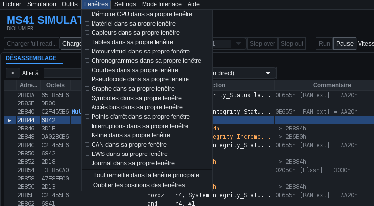
Chaque onglet du bas peut s'ouvrir dans sa propre fenêtre :
- double-clic sur l'onglet, ou clic droit > « Ouvrir dans une fenêtre séparée » ;
- ou le menu Fenêtres, une case par onglet.
L'onglet reste à sa place, marqué ↗, avec les boutons « Afficher la fenêtre » et « Remettre ici ». Pour rattacher : fermer la fenêtre, ou « Remettre dans la fenêtre principale » en bas de celle-ci, ou « Tout remettre dans la fenêtre principale » dans le menu.
Les fenêtres ouvertes et leur position sont retrouvées au lancement suivant, ainsi que la position de la fenêtre principale. Si un écran a été débranché, les fenêtres qui s'y trouvaient reviennent à une position par défaut. « Oublier les positions des fenêtres » remet tout à zéro.
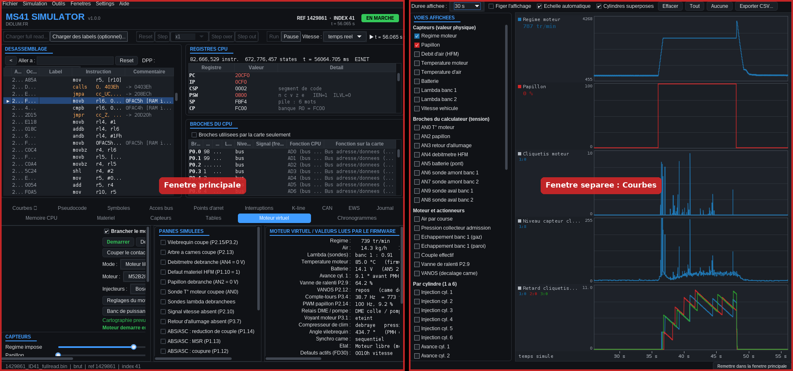
MS41 ECU Tool intégré (v1.1.5)
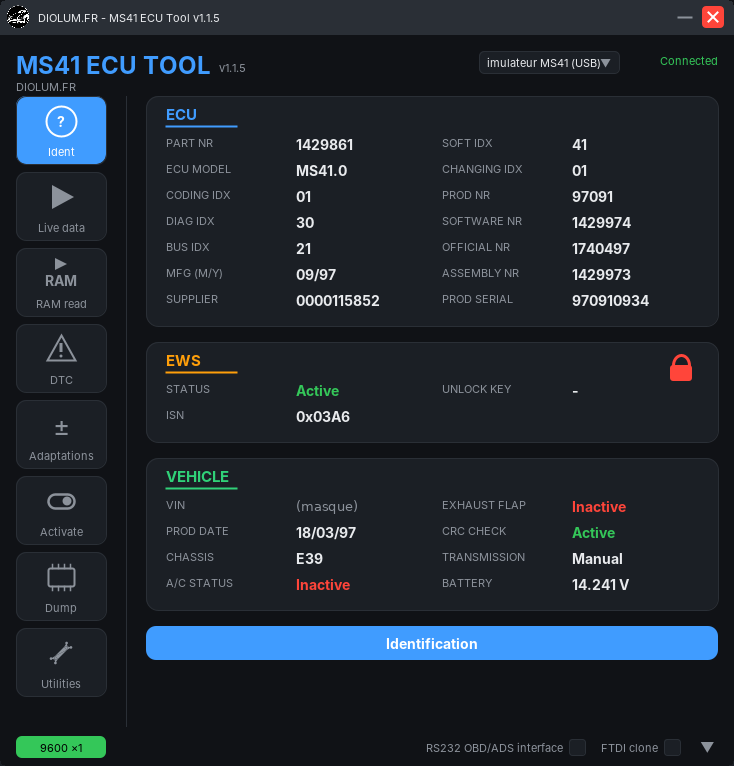
Outils > MS41 ECU Tool (ou le bouton de l'onglet K-line) ouvre l'outil dans sa fenêtre, déjà branché sur la ligne K du simulateur : le port « Simulateur MS41 (USB) » est choisi automatiquement, à 9600 bauds. La simulation passe en temps réel ; il faut que Run soit lancé.
Mode Fast (boutons Partial read fast, Full read fast, Read memory fast, Play fast) :
il fonctionne comme sur la voiture. L'outil déverrouille le calculateur par la commande 0x90 et son mot de
passe, le firmware change lui-même le débit de son UART, et l'outil suit : 19 737, puis 28 800, puis 187 500 bauds.
Une lecture partielle (24 Ko) prend environ 3 s au lieu de 46 s. Si les débits ne correspondent plus, les octets
arrivent en erreur de trame, comme sur un vrai câble.
Comme sur la voiture, le déverrouillage n'est possible que moteur arrêté et laisse le calculateur en
mode service jusqu'à la coupure du contact : allumage et injection coupés, le moteur ne démarre plus. Couper puis
remettre le contact (onglet Moteur virtuel) pour repartir.
Tout fonctionne comme sur une voiture : identification (ci-contre : référence, ISN de l'antidémarrage… ; le numéro de châssis est masqué sur la capture), données en direct, défauts, adaptations, activations, lecture et écriture de la flash. Après une écriture, Fichier > Enregistrer la flash simulée récupère le résultat dans un fichier.
Comme sur la voiture, au-dessus de 2000 tr/min le calculateur ignore une demande de dialogue K-line : il faut ouvrir la communication au ralenti (elle reste ensuite ouverte, jusqu'à 30 s sans échange).
Menus et raccourcis
| Menu | Contenu |
|---|---|
| Fichier | Charger un full read (format détecté, ou forcé : lecture brute de la puce / vue CPU) ; charger ou retirer des labels ; charger une définition RomRaider, choisir la rom de la définition ; enregistrer la flash simulée ; EEPROM simulée (garder, enregistrer, charger, effacer) ; quitter. |
| Simulation | Reset, Step, Step over, Step out, exécuter jusqu'à la ligne, Run, Pause ; point d'arrêt sur la ligne ; arrêter sur un trap matériel ; watchdog actif (reset si non servi). |
| Outils | Moteur : caractéristiques et réglages ; Banc de puissance ; EWS (antidémarrage) ; MS41 ECU Tool branché sur la ligne K du simulateur. |
| Fenêtres | Un onglet par case dans sa propre fenêtre ; tout remettre dans la fenêtre principale ; oublier les positions. |
| Settings | Mute (son du moteur coupé) ; volume du moteur ; échappement (origine, X-pipe + race, race) ; thème (sombre ou clair) ; Manette… (pilotage du moteur virtuel à la manette). |
| Aide | Ce guide (F1) ; À propos. |
Limites actuelles
- Satellite : simulé en boîte noire d'après ce que le firmware attend (son programme n'a pas été lu). Les diagnostics des 24 étages de sortie sont envoyés sans défaut.
- Entrée du contact : le firmware ne détecte la coupure qu'à la chute de la tension mesurée sur AN5 ; le simulateur fait tomber cette tension avec le contact (le câblage exact reste à confirmer sur la carte).
- Son : synthèse réglée sur des enregistrements de 328i E36, à juger à l'oreille.
- S52B32 : au banc virtuel, environ 93 % du couple et 84 % de la puissance constructeur. Le collecteur d'admission du S52 n'est pas modélisé (celui du M52 est utilisé), ses arbres à cames et sa bielle sont des hypothèses, et la cartographie chargée reste celle du calculateur lu (un M3 US a un MS41.2 avec sa propre calibration).
- Couple et puissance maxi : 93 à 99 % des valeurs constructeur pour B20, B25 et B28 (le remplissage est recalé sur les valeurs du B28 ; les B20 et B25 prennent la même forme de courbe, et leurs injecteurs 415 avec la cartographie du B28 donnent un mélange pauvre).
- Papillon : grand ouvert, le firmware lit environ 85 % avec le potentiomètre d'origine du simulateur (0,66-4,35 V) ; l'échelle ou la course réelle du capteur restent à vérifier sur la voiture.
- Capteurs modèles : le capteur de vilebrequin inductif (amplitude, seuil), la limite de cliquetis du moteur et le traitement interne du satellite ne sont pas mesurés sur une voiture.
- Indépendance vis-à-vis du logiciel : le matériel simulé (moteur, capteurs, satellite, EWS) ne lit rien dans la RAM ni dans la calibration du calculateur. Seuls certains affichages (valeurs lues par le firmware, diagnostic en clair, estimation d'après les tables) supposent les adresses de l'ID41.